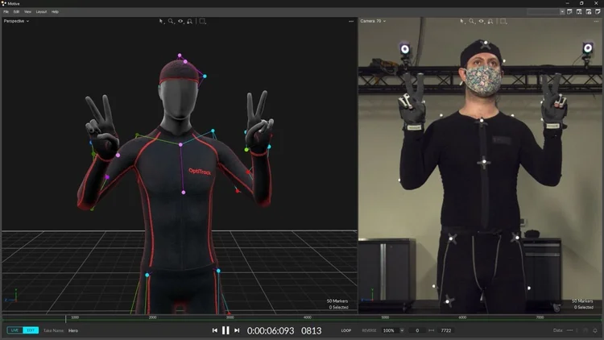
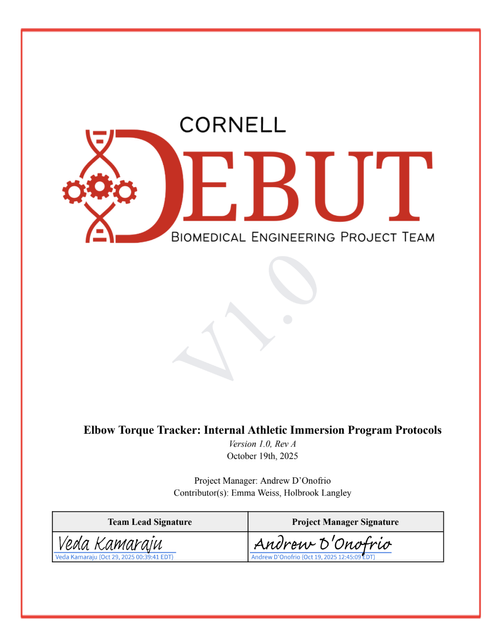

Sports Medicine · Diagnostic Device · Cornell DEBUT
A wearable sEMG/IMU system that estimates elbow torque in real time during UCL rehab. I led hardware, firmware, and the validation study that got it to 2.58% error against motion-capture ground truth.
Full System Final Prototype
Physician Dashboard (www.axiorecoverytracker.com)
Validation vs. OptiTrack Testing
Athletic Immersion Program
Systems EngineeringsEMG / IMU SensingHill's Musculoskeletal ModelPCB Design (KiCAD)Embedded C++Python Signal PipelineFusion360V&V TestingOptiTrack Motion CaptureGitLab CITechnical Leadership
UCL reconstruction ("Tommy John" surgery) recovery is long, and there's no good way to measure how much stress the elbow is actually taking during rehab outside a motion-capture lab. I picked this problem up as Project Manager for a new 8-person Cornell DEBUT team, with the goal of building something that estimates elbow torque continuously, outside the lab, during real throwing sessions.
We started with athlete interviews instead of a spec sheet. One conversation, with a Cornell Baseball player recovering on a synthetic ligament graft, set the form-factor constraint for the whole project: nothing rigid, nothing that changes how the elbow moves under a sleeve. Every comparison point athletes brought up was Driveline's Pulse, so that became our accuracy baseline to beat.
Customer discovery
Before any hardware, we ran structured interviews and field observation with Cornell Baseball, including athletes mid-rehab. Their feedback set the hard constraint that shaped every later design decision: nothing rigid, nothing that alters throwing mechanics.
Sensor fusion approach
Cameras weren't an option in the field, so we estimated torque from two on-body signals instead: surface EMG (sEMG) for muscle activation, and IMUs for limb orientation. Both feed a patient-specific Hill's Musculoskeletal Model, calibrated per athlete in a one-time setup.
τ(θ, t) = Σ r(θ, t) · F(θ, t)
r is the moment arm from each muscle head to the elbow joint, derived from IMU orientation. F is muscle force, derived from sEMG. We modeled three muscle groups identified as the dominant contributors to UCL loading: biceps brachii long head, triceps brachii long head, and pronator teres. Narrowing to three kept the sensor count, and the calibration burden, low enough to be practical outside a lab.
Signal flow. Raw sEMG and IMU streams pass through onboard filtering, get logged to microSD, then run through the offline Hill's Model pipeline to produce a torque estimate per muscle channel.
Build
Three hardware revisions, each solving a different problem. V1.0 was about getting sEMG and IMU data onto an MCU at all — breakout boards on protoboard, casings that just held the form factor together. V1.1 is where I moved to a real two-board architecture: a main board with the ESP32-WROOM, battery charging (MCP73871), and a microSD reader, and a peripheral board that consolidates the sEMG/IMU connections through a TCA9548 I2C multiplexer — needed because every sensor shares the same default I2C address. V2.0 is the version we validated: slimmer housings, a 3.7V LiPo, and a wired Molex/JST connector scheme that's the known limitation going into the next revision.
Main board, V1.1. ESP32-WROOM, MCP73871 charge controller, microSD reader.

Tracker placement. IMU and reflective marker mounts, positioned to overlay directly with the OptiTrack rig.
I designed the 2-layer PCB for both boards in KiCAD — analog filtering, USB-C charging, and I2C multiplexing across 10+ chips and 8 connectors. Housings were modeled in Fusion360 against a sleeve-fit chart we built from forearm/bicep circumference data, X-small through X-large, so the band fits without shifting during a throwing motion. Early bench testing with discrete components (six MyoWare sEMGs, six IMUs, ~$287/unit) confirmed the sensing approach before we committed to the integrated PCB.

Schematic V2.2
Full 2-layer board: analog front end, I2C multiplexer, USB-C charge path, 10+ chips across two boards. Open full schematic (PDF) →
Firmware on the ESP32 (C++) samples at ~10 kHz, runs bandpass filtering and smoothing, and logs to microSD. Post-session, the .CSV feeds a Python pipeline I built and host in a GitLab repo, which runs the Hill's Model calculation and pushes results to a browser-based dashboard.
Live product
I built and host the clinician-facing dashboard at axiorecoverytracker.com. Upload a session .CSV, the Hill's Model pipeline runs server-side, and the dashboard returns elbow torque estimates alongside raw sEMG traces for each of the four target channels. No local install required.
Before writing firmware, we ran an athletic immersion program to test TRIZ design parameters (moving-object length, stationary-object weight, applied force) against real baseball, tennis, and lacrosse throwing motions. That work produced 18 concrete design constraints — fit envelope, mass budget, attachment points — that shaped the V1.0 architecture before we touched hardware.
Immersion testing across baseball, tennis, and lacrosse throwing motions.
Competitive matrix used to set our accuracy and cost targets against Pulse and lab motion capture.
Once V1.0 was working, I co-authored the experimental protocol for access to Cornell's motion capture studio: one pitcher, one catcher, one data collector, five infrared trackers (shoulder, upper arm, elbow, wrist, hand), pitches capped under 20 mph for safety.
Device Specifications
Sensors
MyoWare 2.0 sEMG · LGD320 9DOF IMU
Microcontroller
Sparkfun ESP32-WROOM
Data Rate
~10 kHz sampling
Battery Life
3+ hours continuous logging
Band Mass
< 75 g per band
Surface Temp
< 40°C
Software Stack
Python · GitLab CI · Cloud-hosted dashboard
Target Muscles
Biceps brachii long head · Triceps brachii long head · Pronator teres
Validation
2.58% torque error vs. OptiTrack/OpenSim ground truth
Regulatory Pathway
FDA 510(k), 21 CFR 890.1375 (predicate: CMAP Pro™)
Full V1.0 system: mock arm rig, datalogger, sensor band
Benchtop assembly for isolated sensor verification
Results
Six-participant verification testing confirmed V2.0 held up under real use: full pitching regimens with no observable restriction in range of motion, zero electrical dropouts or sensor migration across an 8-hour continuous wear trial, and a sub-75g band staying under 40°C at the skin.
The result that mattered most was accuracy against ground truth. We ran low-intensity overhand throws (~20 mph) simultaneously through Axio Recovery and Cornell's OptiTrack motion capture studio, with OptiTrack output computed via the Upper Extremity Dynamic Model in OpenSim.
55.6 N·m
Axio Recovery estimate
54.2 N·m
OptiTrack ground truth
2.58%
Error, vs. 38.7% for Pulse
Elbow torque during a single overhand throw. OptiTrack inverse kinematics on the left, Axio Recovery's Hill-Musculoskeletal Model on the right.
That result, plus the commercialization writeup (510(k) pathway, predicate device comparison, cost model), made up our DEBUT VentureWell competition submission.
DEBUT VentureWell Competition Submission
What's next
The known gap is the wired connector scheme — next revision moves to BLE or LoRa to drop the Molex/JST links entirely. We're also working Cornell IRB approval for a follow-up study comparing Axio Recovery directly against motion capture across a larger cohort.